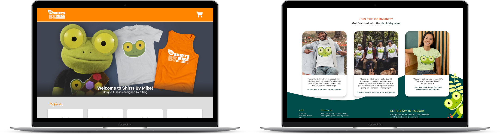
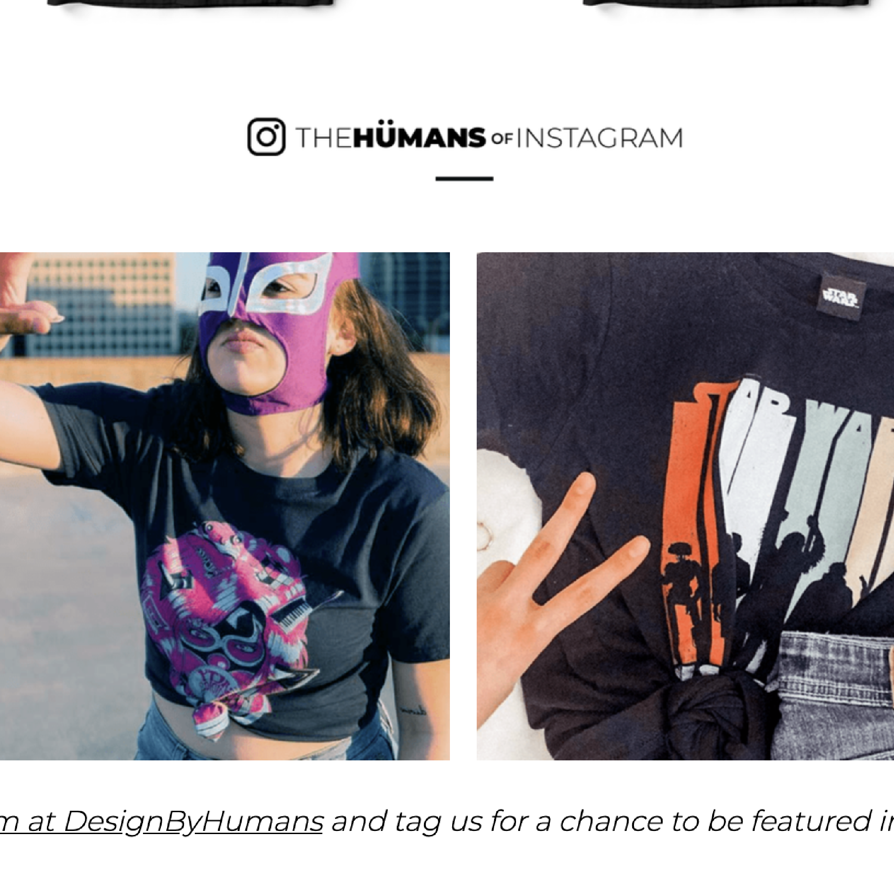
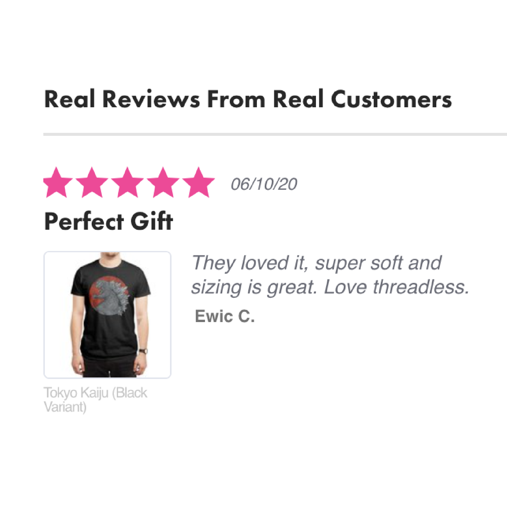
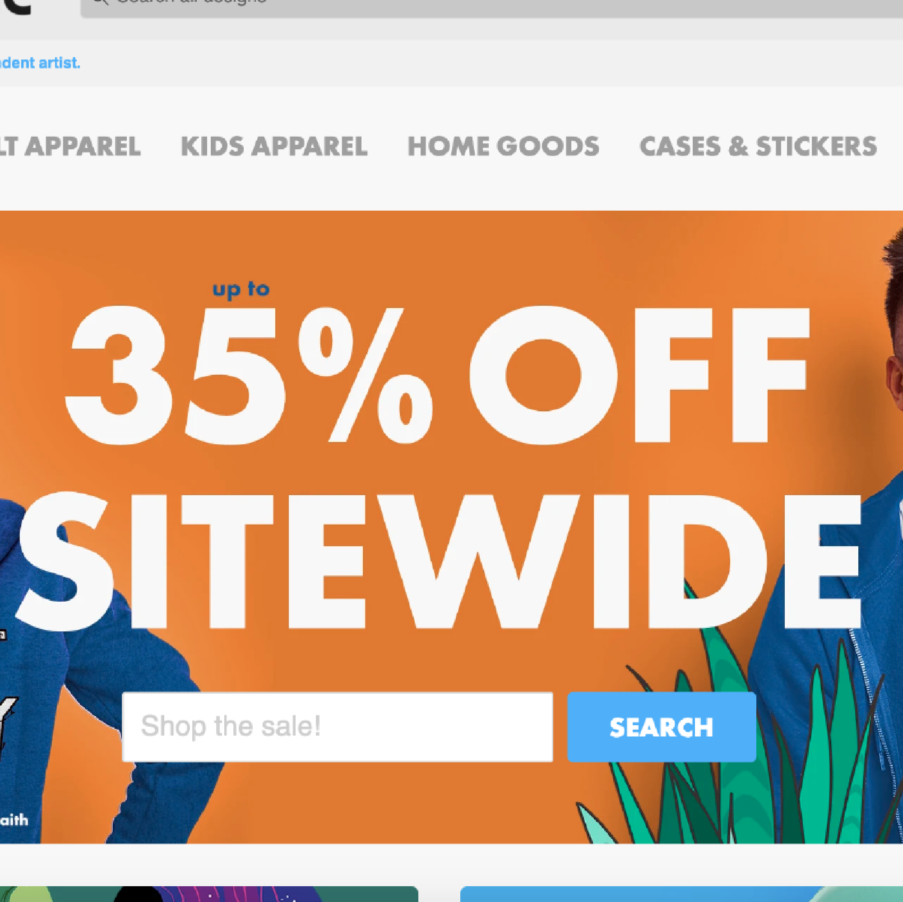
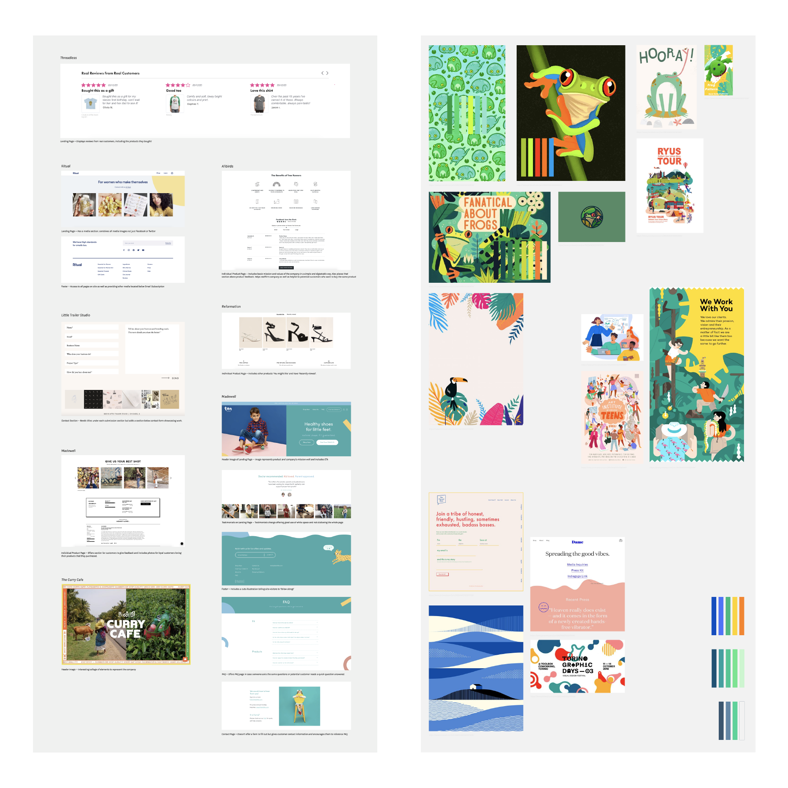

Case Study — 2020
ShirtsbyMike Redesign
Rebranding and redesign of the fictional company, ShirtbyMike — aiming to provide a connected community for Treehouse students by offering fun and playful t-shirts, with the help of their friendly frog, Mike.
Role
Graphic DesignerUser Researcher
UX Designer
Team
Individual
Tools
Adobe DrawAdobe Illustrator
Adobe XD
Timeline
1 month, Feb to Mar

Objective
With my redesign, I aimed to not only increase t-shirt sales by emphasizing the featured t-shirt on various sections of the site but also aimed to attract Treehouse students with the new branding in color and features focusing on the community.
Video of the current site design and layout.
Research
Target Audience —
Primarily based in the United StatesTreehouse students (ages 16 to 35)
Lifelong learners
Values community
Playful personality
Goals —
Increase t-shirt sales by providing a limited edition t-shirtRebrand outdated site to entice Treehouse students
Research and synthesize
User Journey Map of a typical user purchasing a t-shirt.

Design by Humans
The company/site aims to continually engage with customers and build a community with its product by having a ‘TheHumans of Instagram’ section.

Threadless
At the bottom of the main page, the site includes a review section from customers who bought their products. This allows the company to gain credibility and persuades others viewing their product to buy their products.

Tee Public
On the main page, the header image indicates a sale/discount off all the site’s products to entice purchases.
Ideation
Ideation and Exploration
Collecting all my findings, and understanding the company’s goals and the user pain points, I was able to craft initial sketches to explore layouts and features, noting the essential components needed - Contact Page, media sections, etc.
I added sizing charts linked within the original product pages because it would help people reference which size works best for their body type. To bring notice and access to the limited-edition t-shirt of the month, I added a section on the landing page as well as a section at the top of each page highlighting the featured t-shirt.
As the target audience is mainly Treehouse students who value learning and a community, I inputted a section dedicated to the community. With this section, I think users would feel more enticed to buy products and share them with their peers - increasing sales.
I added sizing charts linked within the original product pages because it would help people reference which size works best for their body type. To bring notice and access to the limited-edition t-shirt of the month, I added a section on the landing page as well as a section at the top of each page highlighting the featured t-shirt.
As the target audience is mainly Treehouse students who value learning and a community, I inputted a section dedicated to the community. With this section, I think users would feel more enticed to buy products and share them with their peers - increasing sales.
Sketches done on Adobe Draw.
With wireframes, I was able to focus on the user experience of the page and how each page functions. I focused on accessibility and community when ideating layouts.
Video of a wireframe, made using Adobe XD.
Taking in feedback from the wireframes as well as going through typography hierarchies, layouts, and UX content strategy, I was able to implement more drastic changes to the final prototype.
Initially, I looked back at my research findings to understand and craft the company’s mission as well as understand the target users. Next, I created a moodboard to hone down the personality of the site and company, which then led me to build a branding kit (consisting of colors, new redesign of the logo, icons, etc.) to establish the design components leading to the final mockup. During this stage, I also did additional research on other similar retail companies and crafted an inspoBoard.
Initially, I looked back at my research findings to understand and craft the company’s mission as well as understand the target users. Next, I created a moodboard to hone down the personality of the site and company, which then led me to build a branding kit (consisting of colors, new redesign of the logo, icons, etc.) to establish the design components leading to the final mockup. During this stage, I also did additional research on other similar retail companies and crafted an inspoBoard.

Inspoboard (Left) and Moodboard (Right)
Branding
Taking in mind the target audience and goals of the company, I wanted the brand personality to be more casual, modern, fun, and inclusive but also noting the formality of the company - i.e., not using slang and being too outspoken, without taking in mind other points of view.
Having this new brand personality would help ShirtsbyMike reach their goals because it values and supports an inclusive and supportive community of learners, taking in mind the serious nature of transitioning into a new field or learning a new subject but also noting the playful and interactive nature of the learning space.
New UI Kit for ShirtsbyMike.
FINAL
Video of the final redesign, made with Adobe XD. Images obtained from smartmockups.com.
To keep the site accessible and inclusive to all users, I also crafted a mobile-responsive version of the site. To keep the site easy to navigate and not as cluttered and impacted, I added a hamburger menu and image carousels.
Video of mobile responsive version.
Outcome
I realized and learned that UX Design is not entirely linear. Throughout this entire process of redesigning the ShirtsbyMike site, I kept going back and forth through many of the steps to reaffirm by new insights and connect them back to the initial findings.
In addition to this new learning, I also learned that UX Design is not about solving the visual problems when it comes to the user experience but also the text content as well.
In addition to this new learning, I also learned that UX Design is not about solving the visual problems when it comes to the user experience but also the text content as well.
Next steps
Get more tangible data to get more insight —
Although I did craft a target user persona and create a hypothetical journey map of a potential user, I do wish I got more tangible data - i.e., interviewing 3 Treehouse students and noting their pain points, concerns, and interests from interacting with the site.Iterate a new product or feature —
I wish to iterate a new type of product or feature, other than the current shirts to entice others to join the ShirtsbyMike community. A probable idea that I thought of was to have users be able to submit designs and have the community vote. The most popular design would be featured for next month’s latest shirt!